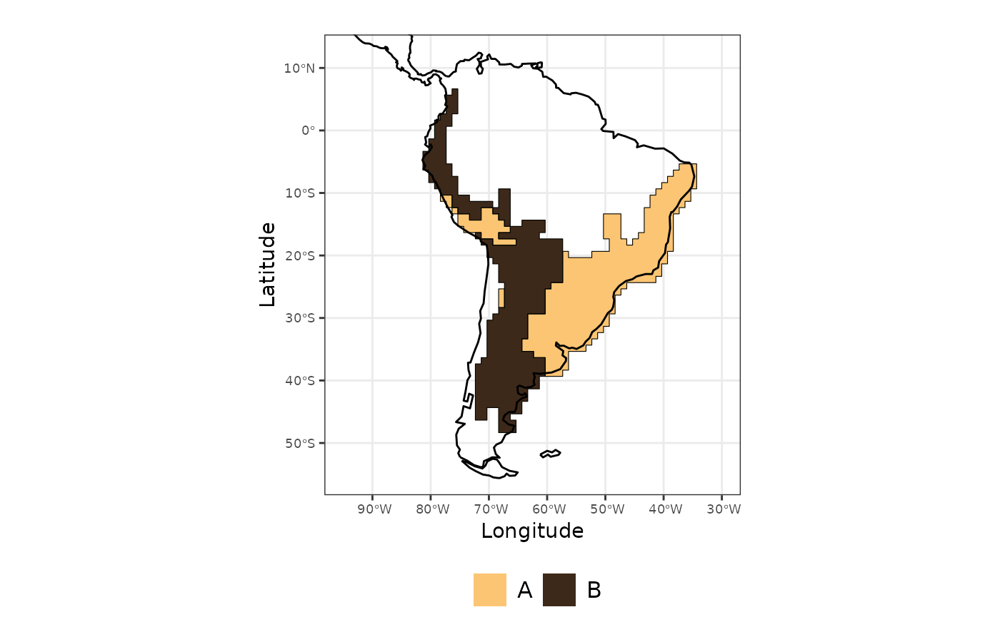
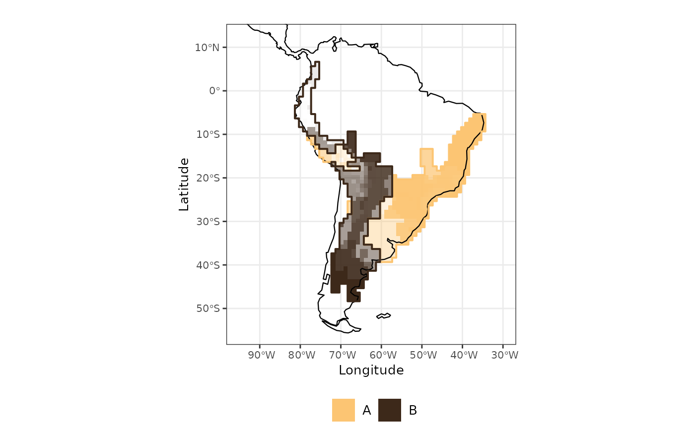

Computing evoregions analysis
building-evoregions.RmdThis article outlines the basic workflow for constructing
evoregions, starting from defining the maximum number of
clusters to the visualization of the final results generated by the
evoregion() function. The workflow is organized into two
main sections:
Setting the maximum number of clusters to be considered in the evoregion analysis.
Computing evoregions using the number of clusters that yields the most stable and interpretable solution in the analysis.
Setting the maximum number of clusters
In the evoregion workflow, defining the maximum number of clusters to
be tested is a key step. This is particularly important because the
find.clusters() function from the {adegenet} package is
sensitive to this parameter: different values of the maximum number of
clusters may lead to different group assignments.
The purpose of the find_max_nclust() function in
{Herodotools} is to identify the maximum number of clusters that
produces the most stable grouping solution. To do this, the function
runs find.clusters() multiple times across a range of
maximum cluster values and evaluates the consistency of the resulting
solutions.
Stability is assessed by computing the correlation between clustering
results across runs, combined with different tolerance values for the
confidence.level argument. The optimal maximum number of
clusters is the one that maximizes this correlation, serving as a proxy
for the stability of the evoregion solution.
In this tutorial, we use example data provided in the {Herodotools}
package. The akodon_site dataset represents the occurrence
of species across assemblages mapped in 1° × 1° grid cells. The
akodon_newick object contains the phylogenetic tree (in
Newick format) describing the evolutionary relationships among species
of the tribe Akodontini.
library(Herodotools)
data("akodon_sites")
data("akodon_newick")
# minor data processing
site_xy <- akodon_sites |>
dplyr::select(LONG, LAT)
akodon_pa <- akodon_sites |>
dplyr::select(-LONG, -LAT)
spp_in_tree <- names(akodon_pa) %in% akodon_newick$tip.label
akodon_pa_tree <- akodon_pa[, spp_in_tree]First, we need to compute the Principal Component of Phylogenetic
Structure (PCPS) matrix, which will be used as input for the
find_max_nclust() function. This can be done using the
pcps() function from the {PCPS} package.
pcps_bray <-
PCPS::pcps(akodon_pa_tree, phylodist = cophenetic(akodon_newick), method = "bray")
values_bray <- pcps_bray$values # PCPS eigenvalues, relative eigenvalues and cumulative relative eigenvalues
# Define a threshold value for eigenvectors (eigenvectors containing more than 5% of variation)
thresh_bray <- max(which(values_bray[, 2] >= 0.05))
vec_bray <- pcps_bray$vectors # eigenvectors Now we can estimate the optimal maximum number of groups using the
find_max_nclust() function implemented in {Herodotools}.
This function supports parallel computation via the {future} package. We
recomend to set the parallel backend using future::plan()
first.
# setting function to work in parallel according to user settings
library(future)
library(progressr)
# Detect safe max cores
ncores <- future::availableCores() # dynamic
safety_margin <- 1
workers <- max(1, ncores - safety_margin)
plan(multisession, workers = workers) this
future::plan(sequential)
handlers(global = TRUE)
handlers("txtprogressbar") # terminal progress bar + timing infoThen, run the find_max_clust function
matrix_optimal_maxclust <-
find_max_nclust(x = vec_bray,
threshold = thresh_bray,
max.nclust = c(3, 4, 5, 7, 9, 10),
nperm = 300,
method = "kmeans",
stat = "BIC",
criterion = "diffNgroup",
subset = 100,
confidence.level = c(0.7, 0.8, 0.9, 0.95, 0.99))
#> Warning: UNRELIABLE VALUE: One of the 'future.apply' iterations
#> ('future_lapply-1') unexpectedly generated random numbers without declaring so.
#> There is a risk that those random numbers are not statistically sound and the
#> overall results might be invalid. To fix this, specify 'future.seed=TRUE'. This
#> ensures that proper, parallel-safe random numbers are produced via a parallel
#> RNG method. To disable this check, use 'future.seed = NULL', or set option
#> 'future.rng.onMisuse' to "ignore".
#> Warning: UNRELIABLE VALUE: One of the 'future.apply' iterations
#> ('future_lapply-1') unexpectedly generated random numbers without declaring so.
#> There is a risk that those random numbers are not statistically sound and the
#> overall results might be invalid. To fix this, specify 'future.seed=TRUE'. This
#> ensures that proper, parallel-safe random numbers are produced via a parallel
#> RNG method. To disable this check, use 'future.seed = NULL', or set option
#> 'future.rng.onMisuse' to "ignore".
#> Warning: UNRELIABLE VALUE: One of the 'future.apply' iterations
#> ('future_lapply-1') unexpectedly generated random numbers without declaring so.
#> There is a risk that those random numbers are not statistically sound and the
#> overall results might be invalid. To fix this, specify 'future.seed=TRUE'. This
#> ensures that proper, parallel-safe random numbers are produced via a parallel
#> RNG method. To disable this check, use 'future.seed = NULL', or set option
#> 'future.rng.onMisuse' to "ignore".
#> Warning: Quick-TRANSfer stage steps exceeded maximum (= 36600)
#> Warning: UNRELIABLE VALUE: One of the 'future.apply' iterations
#> ('future_lapply-1') unexpectedly generated random numbers without declaring so.
#> There is a risk that those random numbers are not statistically sound and the
#> overall results might be invalid. To fix this, specify 'future.seed=TRUE'. This
#> ensures that proper, parallel-safe random numbers are produced via a parallel
#> RNG method. To disable this check, use 'future.seed = NULL', or set option
#> 'future.rng.onMisuse' to "ignore".
#> Warning: Quick-TRANSfer stage steps exceeded maximum (= 36600)
#> Warning: Quick-TRANSfer stage steps exceeded maximum (= 36600)
#> Warning: Quick-TRANSfer stage steps exceeded maximum (= 36600)
#> Warning: Quick-TRANSfer stage steps exceeded maximum (= 36600)
#> Warning: Quick-TRANSfer stage steps exceeded maximum (= 36600)
#> Warning: Quick-TRANSfer stage steps exceeded maximum (= 36600)
#> Warning: Quick-TRANSfer stage steps exceeded maximum (= 36600)
#> Warning: Quick-TRANSfer stage steps exceeded maximum (= 36600)
#> Warning: Quick-TRANSfer stage steps exceeded maximum (= 36600)
#> Warning: Quick-TRANSfer stage steps exceeded maximum (= 36600)
#> Warning: Quick-TRANSfer stage steps exceeded maximum (= 36600)
#> Warning: Quick-TRANSfer stage steps exceeded maximum (= 36600)
#> Warning: did not converge in 100000 iterations
#> Warning: Quick-TRANSfer stage steps exceeded maximum (= 36600)
#> Warning: UNRELIABLE VALUE: One of the 'future.apply' iterations
#> ('future_lapply-1') unexpectedly generated random numbers without declaring so.
#> There is a risk that those random numbers are not statistically sound and the
#> overall results might be invalid. To fix this, specify 'future.seed=TRUE'. This
#> ensures that proper, parallel-safe random numbers are produced via a parallel
#> RNG method. To disable this check, use 'future.seed = NULL', or set option
#> 'future.rng.onMisuse' to "ignore".
#> Warning: Quick-TRANSfer stage steps exceeded maximum (= 36600)
#> Warning: Quick-TRANSfer stage steps exceeded maximum (= 36600)
#> Warning: Quick-TRANSfer stage steps exceeded maximum (= 36600)
#> Warning: Quick-TRANSfer stage steps exceeded maximum (= 36600)
#> Warning: did not converge in 100000 iterations
#> Warning: Quick-TRANSfer stage steps exceeded maximum (= 36600)
#> Warning: did not converge in 100000 iterations
#> Warning: Quick-TRANSfer stage steps exceeded maximum (= 36600)
#> Warning: Quick-TRANSfer stage steps exceeded maximum (= 36600)
#> Warning: did not converge in 100000 iterations
#> Warning: Quick-TRANSfer stage steps exceeded maximum (= 36600)
#> Warning: did not converge in 100000 iterations
#> Warning: Quick-TRANSfer stage steps exceeded maximum (= 36600)
#> Warning: Quick-TRANSfer stage steps exceeded maximum (= 36600)
#> Warning: Quick-TRANSfer stage steps exceeded maximum (= 36600)
#> Warning: Quick-TRANSfer stage steps exceeded maximum (= 36600)
#> Warning: did not converge in 100000 iterations
#> Warning: Quick-TRANSfer stage steps exceeded maximum (= 36600)
#> Warning: Quick-TRANSfer stage steps exceeded maximum (= 36600)
#> Warning: UNRELIABLE VALUE: One of the 'future.apply' iterations
#> ('future_lapply-1') unexpectedly generated random numbers without declaring so.
#> There is a risk that those random numbers are not statistically sound and the
#> overall results might be invalid. To fix this, specify 'future.seed=TRUE'. This
#> ensures that proper, parallel-safe random numbers are produced via a parallel
#> RNG method. To disable this check, use 'future.seed = NULL', or set option
#> 'future.rng.onMisuse' to "ignore".This matrix summarizes the results of the analysis of stability of cluster computation for different values of the maximum number of groups. Each row corresponds to a tested number of groups and contains the associated confidence level. The confidence level represents the proportion of correlation values that are equal to or greater than the threshold being evaluated. Values closer to 1 indicate a higher stability of the clustering solution for that number of groups under the specified confidence level. In other words, values approaching 1 suggest that a given number of groups yields consistent and reliable cluster structures.
In this example, the maximum number of groups that yields the most
stable solution is 3. Therefore, we use this value in the
evoregion() computation that follows.
Computing evoregions
Here we use the function calc_evoregion, originally
described in Maestri
and Duarte (2020) and implemented in the {Herodotools} package. This
classification method performs a biogeographical regionalization based
on a phylogenetic
fuzzy matrix, combined with a Discriminant
Analysis of Principal Components (DAPC) using k-means clustering.
Evoregions represent areas that correspond to centers of lineage
diversification, reflecting historical evolutionary radiations within
clades (Maestri & Duarte, 2020).
To compute evoregions, the user must provide a species occurrence
matrix and a phylogenetic tree. If max.n.clust is not
specified, the evoregion() function automatically selects
the maximum number of clusters using the “elbow” method, as implemented
in the {phyloregion} package (https://besjournals.onlinelibrary.wiley.com/doi/epdf/10.1111/2041-210X.13478).
However, we strongly recommend using the
find_max_nclust() function to determine the maximum number
of clusters, as demonstrated in the previous section. This approach
identifies the most stable clustering solution and is therefore more
aligned with the methodological rationale of the evoregion
framework.
The seed argument ensures reproducibility: if the
analysis is repeated with the same data and argument settings, the same
numerical labels are assigned to the groups. Without setting a seed, the
group labels (i.e., the cluster numbers) may differ across runs even
when the grouping structure remains the same.
Here, we set max.n.clust = 3, based on the result
obtained in the previous step.
regions <-
Herodotools::calc_evoregions(
comm = akodon_pa_tree,
phy = akodon_newick,
seed = 100, max.n.clust = 3
)
site_region <- regions$cluster_evoregions # this is the classification result for each siteWe can plot the regions in the map
evoregion_df <- data.frame(
site_xy,
site_region
)
r_evoregion <- terra::rast(evoregion_df)
# Converting evoregion to a spatial polygon data frame, so it can be plotted
sf_evoregion <- terra::as.polygons(r_evoregion) |>
sf::st_as_sf()
# Downloading coastline continents and croping to keep only South America
coastline <- rnaturalearth::ne_coastline(returnclass = "sf")
map_limits <- list(
x = c(-95, -30),
y = c(-55, 12)
)
# Assigning the same projection to both spatial objects
sf::st_crs(sf_evoregion) <- sf::st_crs(coastline)
# Colours to plot evoregions
col_two_hues <- c(
"#3d291a",
"#fcc573"
)Finally, plotting evoregions in the map
library(ggplot2)
map_evoregion <-
evoregion_df |>
ggplot2::ggplot() +
ggplot2::geom_raster(ggplot2::aes(x = LONG, y = LAT, fill = site_region)) +
ggplot2::scale_fill_manual(
name = "",
labels = LETTERS[1:5],
values = rev(col_two_hues)
) +
ggplot2::geom_sf(data = coastline) +
ggplot2::geom_sf(
data = sf_evoregion,
color = "#040400",
fill = NA,
size = 0.2) +
ggplot2::coord_sf(xlim = map_limits$x, ylim = map_limits$y) +
ggplot2::ggtitle("") +
ggplot2::theme_bw() +
ggplot2::xlab("Longitude") +
ggplot2::ylab("Latitude") +
ggplot2::theme(
legend.position = "bottom",
plot.margin = unit(c(0.1, 0.1, 0.1, 0.1), "mm"),
legend.text = element_text(size = 12),
axis.text = element_text(size = 7),
axis.title.x = element_text(size = 11),
axis.title.y = element_text(size = 11)
)
map_evoregion
The output from evoregion() indicates the presence of two
distinct regions. However, not all cells share the same degree of
affiliation with the region to which they were assigned. Cells with high
affiliation values represent assemblages that are highly similar to
other cells within the same region. Conversely, cells with low
affiliation values correspond to areas with high
turnover, that is, areas where multiple colonization events by
different lineages have occurred (Maestri & Duarte, 2020).
We can calculate the affiliation of each cell to its corresponding
region with the function calc_affiliation_evoreg
# distance matrix using 4 significant PCPS axis accordingly to the 5% threshold
dist_phylo_PCPS <- vegan::vegdist(vec_bray[, 1:thresh_bray], method = "euclidean")
# calculating affiliation values for each assemblage
afi <- calc_affiliation_evoreg(phylo.comp.dist = dist_phylo_PCPS,
groups = site_region)
# binding the information in a data frame
sites <- dplyr::bind_cols(site_xy, site_region = site_region, afi)Now we can map the evoregions along with the degree of affiliation for each cell. The affiliation values are represented by the intensity of the colors: cells with high affiliation appear in strong, saturated colors, while cells with low affiliation are shown in more faded colors. In other words, the more faded a cell’s color, the weaker its affiliation to the assigned evoregion.
map_joint_evoregion_afilliation <-
evoregion_df %>%
ggplot() +
ggplot2::geom_raster(ggplot2::aes(x = LONG, y = LAT, fill = site_region),
alpha = sites[, "afilliation"]) +
ggplot2::scale_fill_manual(
name = "",
labels = LETTERS[1:2],
values = rev(col_two_hues)
) +
ggplot2::geom_sf(data = coastline, size = 0.4) +
ggplot2::geom_sf(
data = sf_evoregion,
color = rev(col_two_hues),
fill = NA,
size = 0.7) +
ggplot2::coord_sf(xlim = map_limits$x, ylim = map_limits$y) +
ggplot2::ggtitle("") +
guides(guide_legend(direction = "vertical")) +
ggplot2::theme_bw() +
ggplot2::xlab("Longitude") +
ggplot2::ylab("Latitude") +
ggplot2::theme(
legend.position = "bottom",
plot.margin = unit(c(0.1, 0.1, 0.1, 0.1), "mm"),
legend.text = element_text(size = 10),
axis.text = element_text(size = 8),
axis.title.x = element_text(size = 10),
axis.title.y = element_text(size = 10)
)
#> Warning: Guides provided to `guides()` must be named.
#> ℹ All guides are unnamed.
map_joint_evoregion_afilliation